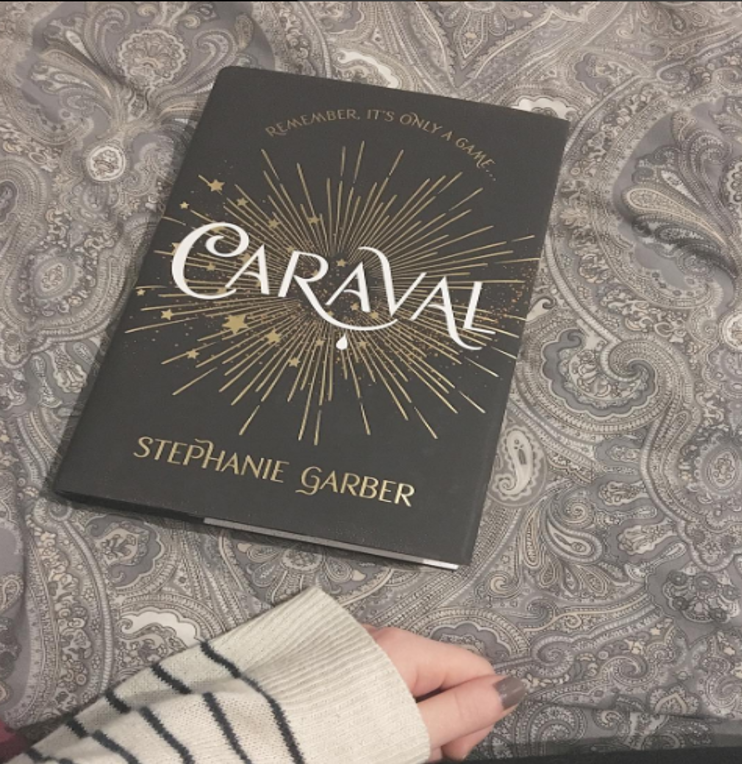
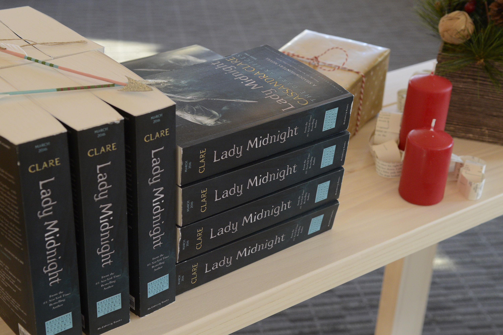

Legendary is the sequel to the New York Times bestseller, Caraval. The first book is about a girl named Scarlett, who lives on an
island that hosts an annual show that the audiance participates in. Scarlett's sister Tella is kidnapped and this year's Caraval show
revolves around finding her. Legendary takes place after the Caraval, while they are still searching for Tella.

The Queen of Air and Darkness
By: Cassandra Clare
December 4th 2018
The Dark Artifices Book 3
The Queen of Air and Darkness is about a group of shadowhunters, Emma Carstairs and the Blackthorn family, who fight demons and other
downworlders. Emma is trying to avenge her parents and her best friend Julien is trying to take care of his siblings. This book is
the third installment of the Dark Artifices series, which takes place after the events of the Mortal Instruments series
(also by Cassandra Clare).

The Darkest Legacy
By: Alexandra Bracken
July 31st 2018
The Darkest Minds Book 4
The Darkest Legacy takes place after Ruby, Liam, Zu and their friends have defeated their government in a post apocolyptic world.
The world has been plagued by a disease that cut the population in half. Everyone under 18 who survived now has powers. This book follows
Zu, who can shoot electricity out of her hands, after the goverment has released the hundreds of kids who were taken away from their parents.
They have their freedom, but now they are living in a state of chaos without a leader to take charge. The Darkest Minds movie is coming out
next August. Click here to watch the trailer.